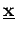
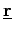
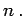
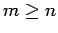
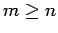

Inhalt Index DeskTop Bronstein

 Lineare Algebra Lineare Gleichungssysteme Überbestimmte lineare Gleichungssysteme Überbestimmte lineare Gleichungssysteme und lineare Quadratmittelprobleme
Lineare Algebra Lineare Gleichungssysteme Überbestimmte lineare Gleichungssysteme Überbestimmte lineare Gleichungssysteme und lineare Quadratmittelprobleme


Der Vektor  ist genau dann eine Lösung von (4.119), wenn der Restvektor  orthogonal zu allen Spalten von  ist. Das bedeutet:
ist. Das bedeutet:
Diese Gleichung stellt ein lineares Gleichungssystem mit quadratischer Koeffizientenmatrix dar. Es wird als System der Normalgleichungen bezeichnet. Seine Dimension ist  Den Übergang von (4.117) zu (4.120) nennt man GAUSS-Transformation. Die Matrix  ist symmetrisch.
ist symmetrisch.
Hat die Matrix  den Rang n (wegen  spricht man in diesem Falle von Vollrang), dann ist die Matrix
den Rang n (wegen  spricht man in diesem Falle von Vollrang), dann ist die Matrix  positiv definit und insbesondere regulär, d.h., das System der Normalgleichungen hat bei Vollrang von
positiv definit und insbesondere regulär, d.h., das System der Normalgleichungen hat bei Vollrang von  eine eindeutige Lösung.
eine eindeutige Lösung.